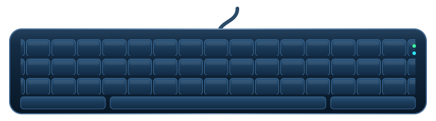
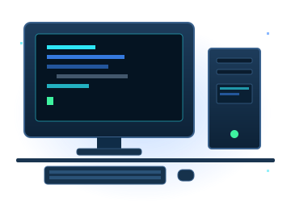
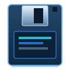

SYSTEM v2.35 // READY
TECSUP · LIMA, PERÚ
FRANCES235.EXE
□ ×
▶ SELECT
○ BACK
FRANCES
MODEL 235

01 // Trabajo
Proyectos
Proyectos terminados y otros que sigo construyendo paso a paso.
02 // Perfil
Sobre mí

Soy Francesco Moreno Acosta, estudiante de Tecsup. Me apasiona convertir ideas en interfaces claras, rápidas y accesibles, y disfruto aprender nuevas herramientas aplicándolas en proyectos reales.
Actualmente trabajo con HTML, CSS y JavaScript, y sigo ampliando mis conocimientos en desarrollo frontend y videojuegos.
Frontend
- HTML5
- CSS3
- JavaScript
- Responsive
Herramientas
- Git
- GitHub
- VS Code
- Figma

03 // ContactoHablemos
¿Tienes un proyecto, una práctica o una idea en mente? Escríbeme y con gusto conversamos.